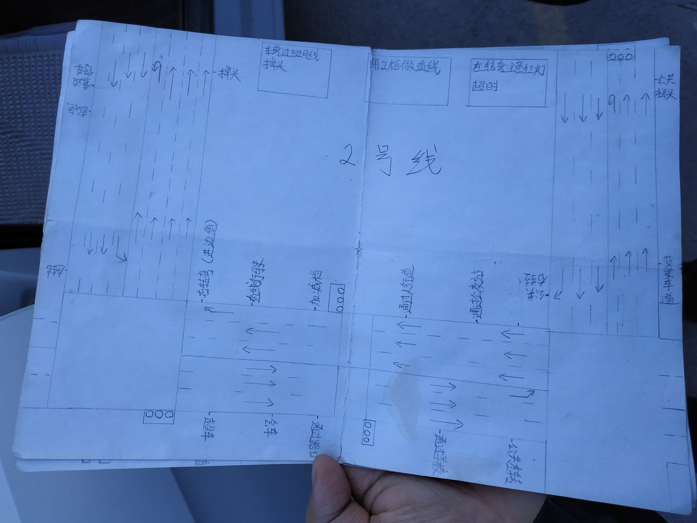

考前考生验证，在副驾驶门口等待，语音提示上车准备，或观察安全员手势， 1. 上车后调整座位、头枕 2. 检查灯光是否处于近光状态 3. 调整后视镜（后视镜基本不用动），报告考官已准备好，语音提示上车准备，考生开关车门，语音提示项目结束。 4. 检查空挡、手刹 5. 观察车是否在启动状态，看左侧转速表（转速表指针在零处说明处于熄火状态），打火。 6. 等待观察员确认可以，下车检查一周，从车后到车前，车右后角拍4-5下，左前角拍4-5下，结束上车。 7. 系安全带，上车准备结束。
语音提示下面将进行模拟夜间行驶场景灯光使用的考试，请按我的指令在5秒内作出相应的灯光操作，按顺序考。
叮声后语音提示开始起步：
无语音、叮声提示开始，有语音提示结束，在上一项目结束，不提示下一项目。开始通过人行横道，从车头与标志牌对齐开始轻点刹车，直至项目结束。语音提示前方有行人通过，须在停止线十米以内将车停下，二秒后，语音提示行人以通过，必须在十秒内平稳起步，如果没有语音提示前方行人通过，则不需要停车(注车速不能超过二十迈)
无语音、叮声提示开始，有语音提示结束，在上一项目结束，不提示下一项目。车速保持在20迈以下，从车头与标志牌对齐开始轻点刹车，直至项目结束。此项不存在路口行人通过，无需停车，语音提示项目结束，下一考试项目，XXXX，听到叮声后考试开始
无语音、叮声提示开始，有语音提示结束，在上一项目结束，不提示下一项目，车速20迈以下，从车头与标志牌对齐开始轻点刹车，直至项目结束。语音提示，前方有行人通过，需在停止线十米以内，将车停下，二秒后语音提示，行人己通过，在十秒内平稳起步，语音提示，项目结束，下一项目XXXX。
叮声后语音提示请根据道路交通情况选择合适时机变更车道（根据路况可向左和向右变更车道），打左转向灯，转向灯工作3秒，看左后视镜，确认一道安全后将车变入一道，语音提示项目结束，此科目无速度要求。语音提示下一考试项目直线行驶，听到叮声后考试开始
叮声后打在转向灯，不可压实线，转向灯必须工作够三秒，开始轻点刹车，语音提示项目结束。电脑语音播报及格。考试完毕。
